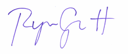

1885 Buckrake Ave
Bozeman, MT 59718
6 June, 2011
Dear Schedulicity,
I am writing today in response to the open web developer position at Schedulicity. I love the web. There is so much information out there that can be used to improve daily life and I love finding ways to do so. In the process, I have found that successful communication is everything. Information has no meaning unless it is expressed in a consumable way. The best part about the web is that it has so many built-in ways to provide that meaning: REST requests, HTML pages, CSS rules, and JSON hashes all exist to add structure to chaos.
I have developed on the web for over 5 years and created websites for even longer. My web development experience is primarily in PHP and Ruby, but I also used JSP/Java in a previous position. In my current role, I provided PHP language and OOP training for the web QA group and also headed up the movement to Selenium as the automation framework for regression testing in our organization.
One project I am currently working on is a web framework. Abstracting the web application stack into the MVC paradigm was a great learning experience; adding full unit and functional test coverage to the framework has proved time consuming, challenging and--most of all--rewarding. Right now I am implementing more flexible routing to make the framework more fully RESTful.
My formal education is in economics, in which I received my M.S. in May 2010 after defending a thesis on currency reserve accumulation by the Bank of China. I believe that studying economics has given me an unusual perspective on software and web development as a whole-the efficient nature of the economist is both at odds and in line with the "do everything yourself, but do it fast" mentality often present in development.
Being an adjunct instructor of economics allowed me to practice conveying complicated ideas to students who are seeing the material for the very first time. This has given me a new perspective on communication; information means nothing unless the audience is equipped to consume it. If you can not affect the equipment, then find a better way to deliver the message.
For the past year I have worked in quality assurance, putting what I know about web standards and testing to use against production code. I often hear that the two skillsets--development and QA--are mutually exclusive; that developers are one-track minded and forget to test and quality assurance engineers are not technical enough to produce code and features on their own. I disagree with this assesment. Testing is shallow and incomplete without an intuitive understand of software design and development is misguided and inefficient without an eye on the needs and quality of the user's experience.
With my education and experience, I think I would make an ideal candidate for the open web developer position.
You will find both an attached, archived version of my resume and a URI for the resume as it exists on the web. I hope you will consider me for the position and I look forward to hearing from you soon regarding an interview. Since I live in Bozeman, I would love to stop by the office and introduce myself-provided that it is convenient for you! Thank you so much for reading this, and for considering me for this position.
Sincerely,
Ryan Gantt